Historia de Modo Diablo
Modo Diablo fue un colectivo fundamental en el nacimiento y la expansión del trap argentino, formado por Duki, YSY A y Neo Pistea. Surgió en Buenos Aires a mediados de la década de 2010, en un contexto donde el rap y el freestyle comenzaban a ganar fuerza entre los jóvenes. Su estilo rebelde, innovador y callejero marcó un antes y un después en la música urbana argentina.
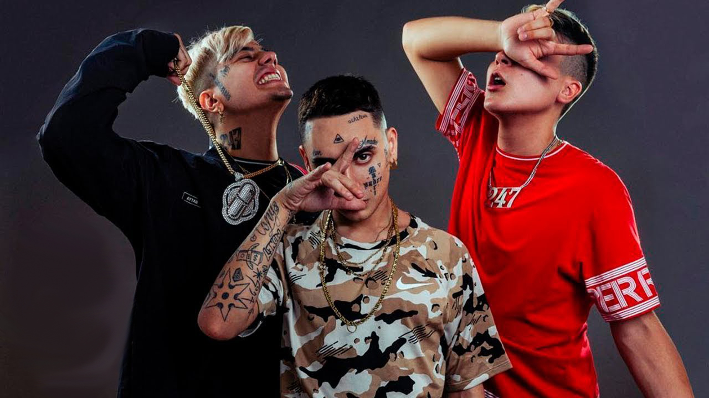
No se trataba solo de un grupo musical, sino de una forma de entender la cultura urbana: grabar sin grandes recursos, apoyarse entre amigos, mezclar batallas de freestyle con estudio casero y utilizar Internet como plataforma principal de difusión. Esta mentalidad independiente fue clave para que el trap argentino se desarrollara fuera de la industria tradicional.
Conoce a sus integrantes
| Duki | YSY A | Neo Pistea |
|---|---|---|
| Mauro Ezequiel Lombardo Quiroga | Alejo Nahuel Acosta Migliarini | Sebastián Ezequiel Chinellato |
| 24 de junio de 1996 | 12 de julio de 1998 | 5 de octubre de 1994 |
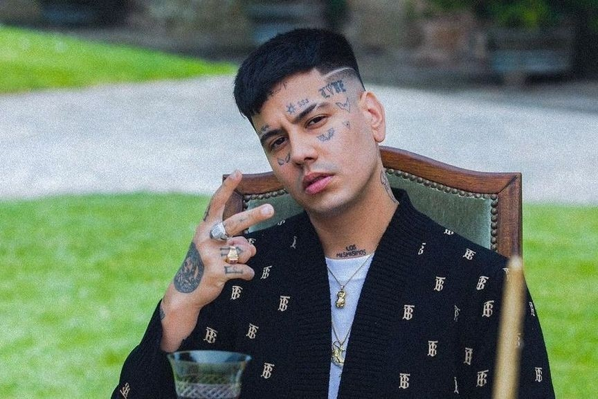 |
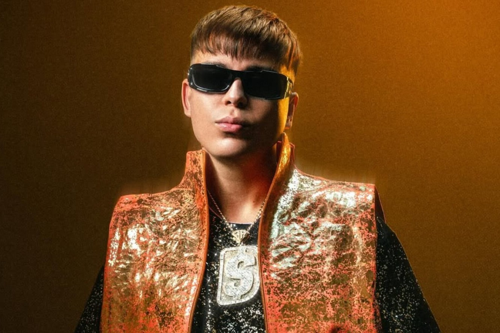 |
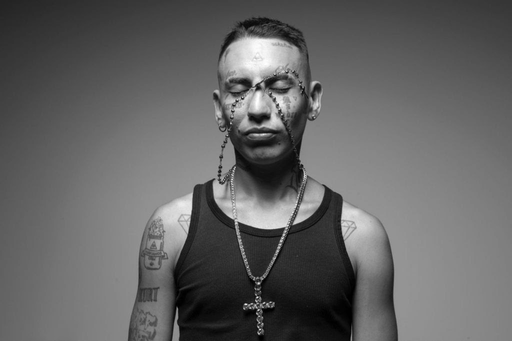 |
| Empezó en el freestyle y destacó en El Quinto Escalón. Con Modo Diablo ganó visibilidad y después consolidó su carrera en solitario, llevando el trap argentino a nivel internacional. | Fue organizador de El Quinto Escalón y una figura clave en la escena del freestyle. Su estilo versátil y lírico le permitió destacar en Modo Diablo y después en su trayectoria en solitario. | Se distingue por su voz característica y sus letras que reflejan la vida urbana. Su estilo mezcla trap y rap melódico, y tras Modo Diablo continúa siendo un referente dentro del género. |
Orígenes y el Quinto Escalón
El origen de Modo Diablo está estrechamente ligado al crecimiento del freestyle en Buenos Aires a mediados de la década de 2010. En ese momento, el rap improvisado comenzaba a ganar popularidad entre los jóvenes y las plazas se convertían en puntos de encuentro donde competir, rimar y compartir música de forma espontánea. En ese contexto nació El Quinto Escalón, una competencia que terminaría siendo clave para toda la escena urbana argentina.
El evento, organizado por YSY A junto a otros colaboradores, se celebraba en el Parque Rivadavia y reunía cada fin de semana a decenas de MCs y espectadores. Lo que empezó como una reunión pequeña fue creciendo rápidamente gracias al boca a boca y a la difusión en YouTube, hasta convertirse en la batalla de freestyle más importante del país. Cada edición congregaba a cientos de jóvenes que acudían tanto a competir como a descubrir nuevos talentos.
A diferencia de otras competiciones más formales, El Quinto Escalón tenía un ambiente cercano y callejero. No había grandes escenarios ni producciones complejas: solo un micrófono, un altavoz y una ronda de público rodeando a los participantes. Esa sencillez fomentaba la creatividad, la improvisación y el contacto directo con la gente, creando una auténtica comunidad alrededor del rap.
Fue en este entorno donde los futuros integrantes de Modo Diablo comenzaron a coincidir con frecuencia. Las batallas les permitieron desarrollar agilidad mental, presencia escénica y seguridad frente al público, habilidades que más tarde trasladarían a sus canciones. Además, el evento facilitó que se conocieran, compartieran amistad y empezaran a colaborar fuera de la competición.
Muchas de estas batallas se subían a internet y acumulaban miles (e incluso millones) de visitas, algo poco habitual para artistas independientes en aquella época. Gracias a esa exposición digital, varios participantes empezaron a ganar seguidores antes incluso de publicar música profesional, sentando las bases de lo que después sería el auge del trap argentino.
Por todo ello, El Quinto Escalón es considerado la cantera de la que surgió gran parte de la primera generación del movimiento urbano moderno. Más que una simple competencia, fue el punto de partida donde se formaron los artistas y las conexiones que darían lugar, poco tiempo después, al nacimiento de Modo Diablo.
El Quinto Escalón cuenta con canal de YouTube , y aquí debajo se puede ver un vídeo de una batalla entre Duki y Nacho, la final del torneo de 2016.
La consolidación del grupo
Tras coincidir en El Quinto Escalón y compartir amistad dentro de la escena del freestyle, los tres comenzaron a colaborar de forma cada vez más habitual. Lo que al principio eran simples improvisaciones o apariciones conjuntas en batallas terminó convirtiéndose en una unión artística estable. La química entre sus estilos (melodía, técnica y crudeza) hacía que encajaran de manera natural, complementándose en cada canción.
El verdadero punto de consolidación llegó cuando empezaron a reunirse de forma constante en la casa de Antezana 247, conocida más tarde como “La Cuna del Trap”. Este lugar no era solo una vivienda, sino un espacio creativo donde convivían, componían y grababan durante horas. Allí transformaron la energía del freestyle en canciones producidas profesionalmente, dando el salto del parque y la plaza al estudio de grabación.
En esta casa se organizaron sesiones nocturnas de composición, se probaban beats, se escribían letras colectivamente y se invitaba a otros artistas emergentes a participar. Muchas ideas surgían de manera espontánea: un freestyle se convertía en estribillo, una broma terminaba siendo una frase icónica o una reunión entre amigos acababa en una grabación completa. Este ambiente relajado y colaborativo favoreció una creatividad constante.
Fue también en esta etapa cuando empezaron a publicar canciones conjuntas bajo el nombre de Modo Diablo, más como una actitud que como una banda tradicional. El término hacía referencia a estar concentrados al máximo, con energía y determinación para destacar dentro de la escena. Esa mentalidad competitiva y segura se reflejaba tanto en la música como en su imagen pública.
Gracias a esta dinámica de convivencia, trabajo colectivo y presencia activa en redes sociales, el grupo ganó popularidad rápidamente. Pasaron de actuar en eventos pequeños y plazas a llenar salas y convertirse en referentes del nuevo sonido urbano argentino. Así, Modo Diablo dejó de ser solo un grupo de amigos que rapeaban juntos para convertirse en el núcleo de todo un movimiento cultural.
Más detalles sobre La Cuna del Trap:
- Funcionaba como casa, estudio casero y punto de encuentro para artistas urbanos.
- Allí se grabaron maquetas y canciones que más tarde se volverían virales.
- Productores, beatmakers y raperos jóvenes acudían para colaborar o aprender del proceso creativo.
- Actualmente se puede visitar, ubicada en la zona de Autónoma de Buenos Aires, Argentina.
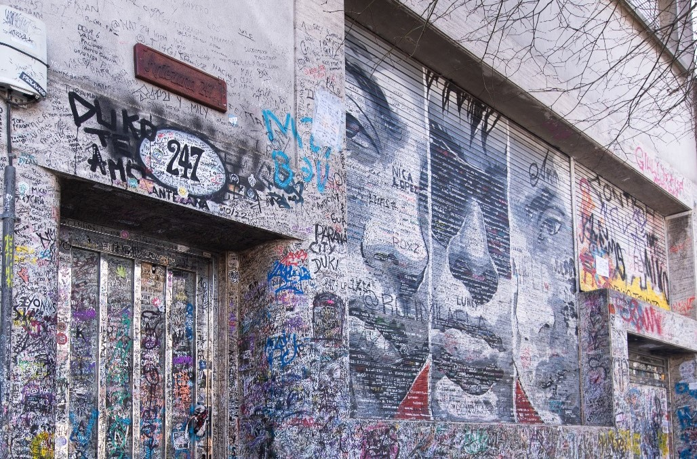
Aquí un artículo sobre la cuna del trap del periódico "La Nación"
Estilo musical y lírico
El sonido de Modo Diablo se caracterizó por una mezcla directa entre el trap estadounidense y la identidad urbana de Buenos Aires. No se limitaron a imitar el estilo de Atlanta o Miami, sino que adaptaron ese sonido a su propio contexto, incorporando jerga local, referencias al barrio, experiencias personales y una actitud más cruda y callejera.
En lo musical, sus bases se construían con 808 potentes, hi-hats rápidos, bajos profundos y sintetizadores oscuros, típicos del trap moderno. Sin embargo, añadían melodías pegadizas y estribillos fáciles de recordar, lo que hacía que sus canciones funcionaran tanto en batallas de freestyle como en discotecas o conciertos masivos. Esta combinación de agresividad y melodía fue una de las claves de su éxito.
Las letras hablaban de superación personal, ambición, fama repentina, vida nocturna, amistades, barrio y juventud. Muchas canciones reflejaban el paso de tocar en plazas y competir en batallas a llenar salas y vivir de la música, algo con lo que muchos jóvenes podían identificarse. El tono solía ser desafiante, seguro de sí mismo y provocador, reforzando esa idea de “modo diablo” como estado mental de máxima intensidad.
Cada integrante aportaba una personalidad sonora distinta, lo que hacía que los temas del grupo tuvieran dinamismo y contrastes:
- Duki: destacaba por su capacidad melódica y estribillos pegadizos. Alternaba canto y rap, con un flow rápido y emocional que conectaba fácilmente con el público.
- YSY A: aportaba técnica y estructura lírica, con rimas complejas, métricas cambiantes y una gran habilidad para improvisar, heredada del freestyle.
- Neo Pistea: añadía una voz más grave y oscura, con una interpretación cruda y callejera que reforzaba el carácter trapero del grupo.
El resultado era un equilibrio entre improvisación y producción profesional: muchas ideas nacían del freestyle, pero luego se pulían en el estudio hasta convertirse en canciones completas. Esta forma de trabajar influyó en gran parte de la nueva generación de artistas urbanos argentinos, que adoptaron el mismo método de crear desde casa y experimentar sin límites técnicos.
Gracias a esta identidad sonora propia, Modo Diablo ayudó a definir cómo debía sonar el trap argentino: directo, emocional, callejero y con personalidad local, sentando las bases del estilo que dominaría la escena en los años siguientes.
Música y legado
La etapa de Modo Diablo como grupo no fue muy larga en el tiempo, pero sí extremadamente influyente. En pocos años publicaron una serie de canciones que definieron el sonido del trap argentino moderno y sirvieron como carta de presentación del movimiento urbano del país al resto de Latinoamérica. Sus temas combinaban energía de freestyle, producción profesional y una actitud desafiante que conectó rápidamente con el público joven.
Más que simples lanzamientos, muchas de sus canciones se convirtieron en auténticos himnos generacionales, sonando en plazas, fiestas, discotecas y redes sociales. Estas son las cinco piezas más representativas del colectivo:
- “UH”: uno de los primeros temas donde se percibe claramente la química entre los tres. Destaca por su crudeza, un beat oscuro y barras directas que reflejan la mentalidad competitiva heredada del freestyle. Supuso una declaración de intenciones sobre el sonido que querían construir.
- “QUAVO (#ModoDiablo)”: probablemente el himno más reconocido del grupo. Inspirado en el trap estadounidense, mezcla melodía y agresividad con un estribillo muy pegadizo. La canción ayudó a que el nombre de Modo Diablo empezara a circular fuera de Argentina y se convirtió en un símbolo de su identidad colectiva.
- “Trap N Export”: como su propio título indica, representa la idea de “exportar” el trap argentino al mundo. Con un sonido más pulido y ambicioso, mostró que la escena local podía competir a nivel internacional. Fue clave para consolidar la profesionalización del género.
- “Vuelta a la Luna (Remix)”: una colaboración amplia que reforzó el espíritu comunitario del movimiento. Al reunir distintas voces de la escena urbana, demostró que el trap argentino crecía de forma colectiva y no individual, ampliando todavía más su alcance.
- “Tumbando el Club (Remix)”: uno de los mayores éxitos comerciales relacionados con el grupo. La canción trascendió el circuito underground y empezó a sonar en radios, fiestas y plataformas masivas, acercando el trap al público general y confirmando que el género ya formaba parte del mainstream.
A través de estos lanzamientos, el colectivo logró algo poco habitual en la época: pasar del circuito de batallas y YouTube a las listas de reproducción más escuchadas del país. Su música dejó de ser un fenómeno local para convertirse en parte de la cultura popular argentina.
El legado de Modo Diablo no se limita a sus canciones. También transformaron la forma de entender la industria musical: grababan desde casa, colaboraban constantemente con otros artistas, utilizaban redes sociales como principal medio de difusión y priorizaban la autenticidad frente a las discográficas tradicionales. Este modelo fue replicado por decenas de músicos emergentes.
Gracias a su impacto, el trap argentino ganó visibilidad internacional y abrió el camino para que muchos artistas posteriores pudieran llenar estadios, girar por Latinoamérica y profesionalizar sus carreras. Aunque el grupo terminó separándose para centrarse en proyectos en solitario, su etapa conjunta sigue considerándose el punto de partida del movimiento urbano moderno en Argentina.
Impacto cultural
La influencia de Modo Diablo no se limitó únicamente a la música o a la estética, sino que transformó la forma en que el trap y la cultura urbana eran percibidos en Argentina. Antes de su aparición, el género estaba asociado a un ámbito muy underground, reducido a batallas en plazas, vídeos caseros y un público minoritario. Tras su éxito, el trap pasó a ocupar el centro de la conversación juvenil y comenzó a considerarse una expresión cultural legítima.
Su popularidad ayudó a que los medios de comunicación, festivales y discotecas empezaran a prestar atención a artistas urbanos. El trap dejó de ser un fenómeno marginal y empezó a sonar en radios, listas de éxitos y grandes escenarios. Esto abrió oportunidades profesionales que hasta entonces eran impensables para raperos surgidos del freestyle.
Además, demostraron que era posible construir una carrera musical sin depender de los caminos tradicionales de la industria. Grabando desde casa, utilizando YouTube y redes sociales para difundir su trabajo y gestionando su propia imagen, sirvieron como ejemplo para cientos de jóvenes que comenzaron a producir música de manera independiente.
También influyeron en la mentalidad de toda una generación: convirtieron el freestyle, la improvisación y la cultura de barrio en algo aspiracional, mostrando que el talento nacido en la calle podía llegar a escenarios internacionales. Muchos adolescentes empezaron a ver la música urbana no solo como entretenimiento, sino como una posible salida creativa y profesional.
Artistas influenciados y expansión de la escena
El impacto de Modo Diablo no terminó con la separación del grupo. Su éxito abrió el camino para que numerosos artistas jóvenes se animaran a grabar trap en Argentina y profesionalizaran una escena que hasta entonces era casi underground. Muchos de ellos compartieron espacios, colaboraciones o simplemente crecieron escuchando sus canciones, adoptando su forma de trabajar y su mentalidad independiente.
Gracias a este impulso, el trap argentino dejó de depender de unos pocos nombres y se convirtió en un movimiento amplio y diverso, con estilos propios y proyección internacional. Entre los artistas más representativos de esta generación se encuentran:
| KHEA |
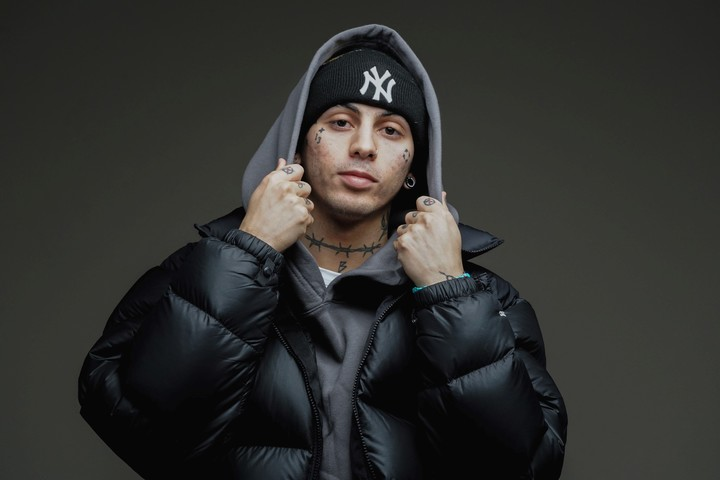 |
Uno de los pioneros del trap argentino junto a la primera ola del género. Colaboró con miembros del colectivo y ayudó a popularizar el sonido melódico y accesible del trap en plataformas digitales. |
|---|---|---|
| Cazzu | 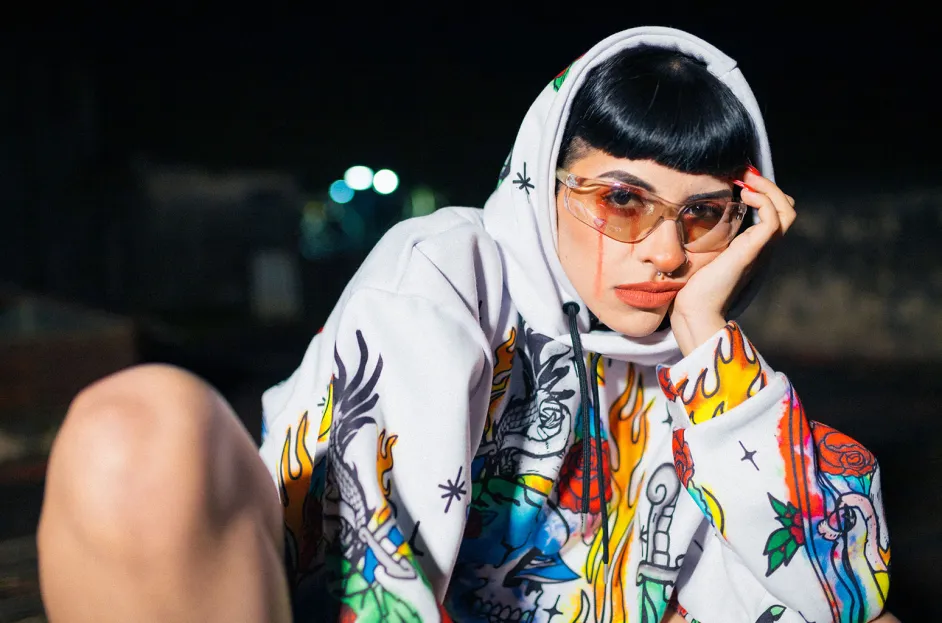 |
Referente femenina de la escena urbana. Su mezcla de trap, reguetón y R&B amplió los límites del género y demostró que el movimiento podía ser diverso y transversal. |
| Lit Killah |  |
Surgido también del freestyle, representa la conexión directa entre las batallas y el éxito comercial, siguiendo el mismo camino que iniciaron los integrantes de Modo Diablo. |
| Ecko | 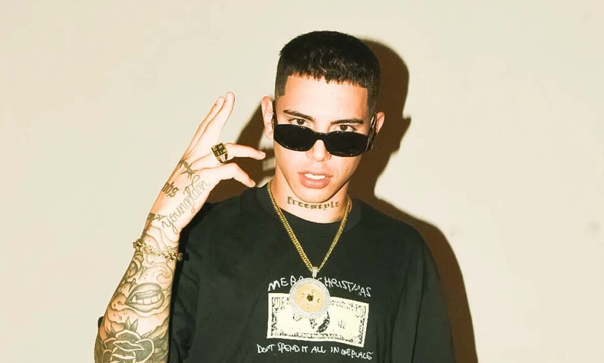 |
Comenzó en competiciones de plaza y más tarde desarrolló una carrera profesional dentro del trap, manteniendo la influencia del estilo crudo y callejero característico de la primera generación. |
| Seven Kayne | 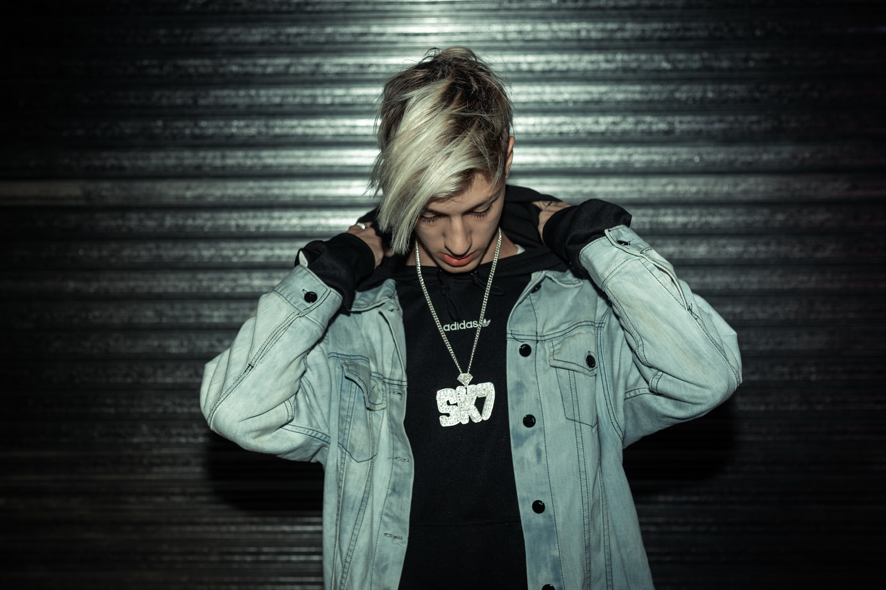 |
Incorporó elementos de rock, punk y trap, mostrando cómo la escena evolucionó y se volvió más experimental a partir de las bases que sentó el colectivo. |
| Bhavi y Ca7riel: | 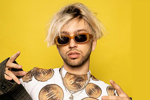 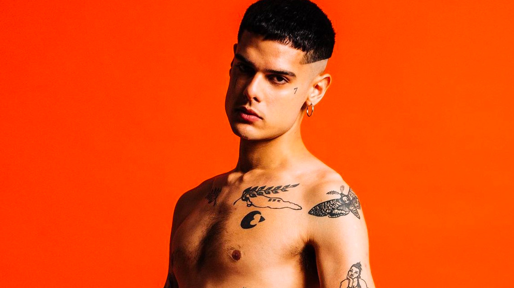 |
Aunque con propuestas más alternativas, forman parte de la misma ola urbana que creció en paralelo y ayudó a diversificar el sonido argentino hacia estilos más híbridos. |
| C.R.O | 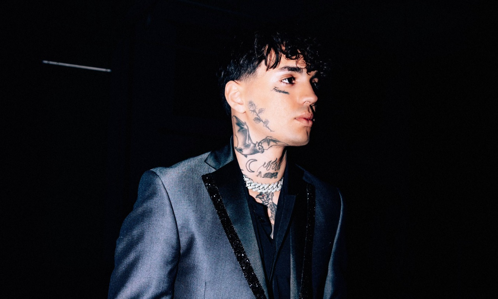 |
Referente de la nueva ola del trap argentino. Aportó un enfoque más melódico e introspectivo, ampliando el sonido del género hacia climas emocionales y estéticas alternativas, con un crecimiento fuerte en plataformas digitales. |
| Nicki Nicole, Trueno y Tiago PZK | 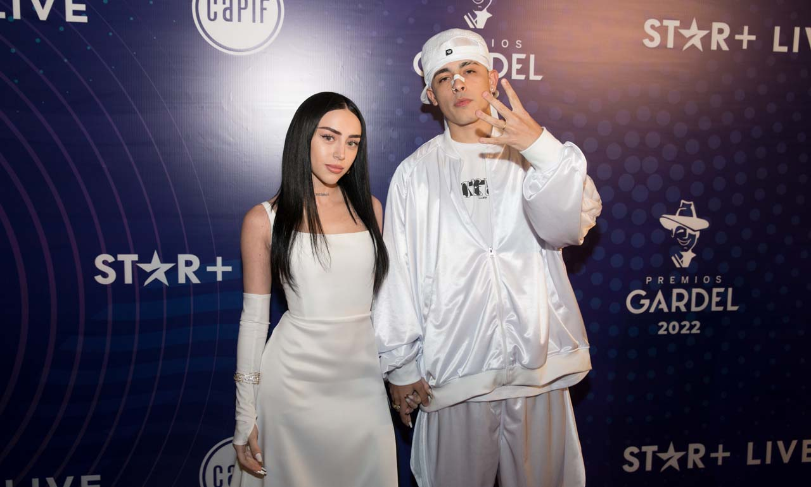 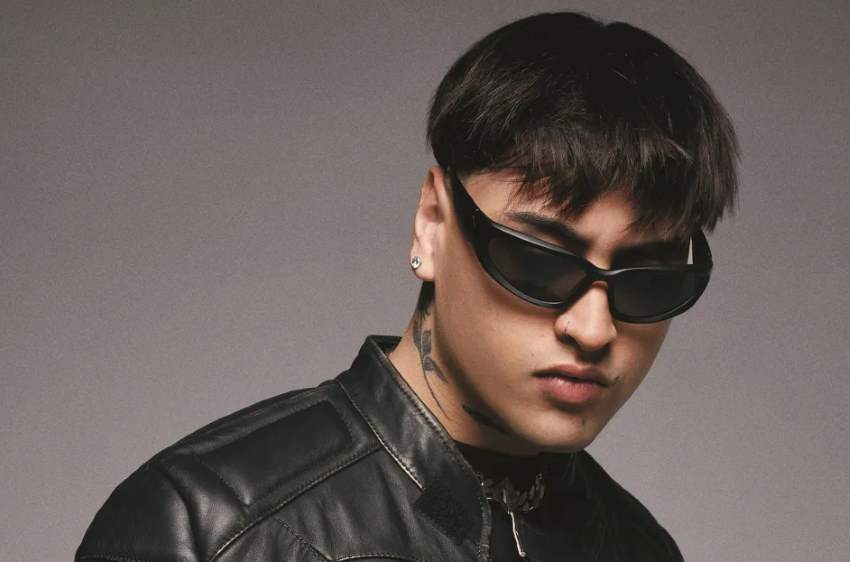 |
Pertenecen a una generación posterior que ya encontró un camino abierto por el éxito del trap anterior, logrando llevar la música urbana argentina a festivales y mercados internacionales. |
| Lucho SSJ | 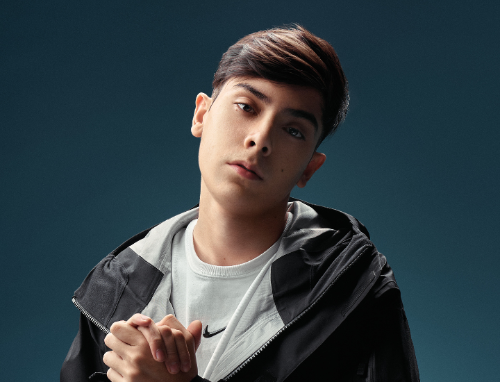 |
Surgido del freestyle y el under, representa la conexión directa entre la calle y la profesionalización del trap. Su estilo crudo y versátil ayudó a mantener la esencia barrial de la primera generación dentro de la expansión comercial de la escena. |
Todos ellos, con estilos diferentes, comparten un punto en común: forman parte de una escena que pudo desarrollarse gracias al impulso inicial de colectivos como Modo Diablo. De este modo, su legado no solo se mide por sus propias canciones, sino por haber sentado las bases de toda una generación de artistas que continúan expandiendo el alcance del trap argentino en la actualidad.